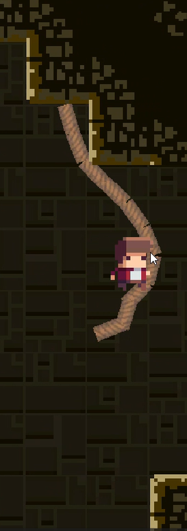
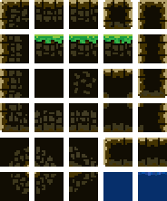

Tilevania

Tilevania was a Project we had to make for the end of Semester 2 in the 2D Game Development Module. the module had use making This basic 2D game and at the end we had to put everything we learned together while also adding a feature of our own. in the final project I had a player with health and death with respawn. enemies to attack the player, ( basically just goombas from mario ), spikes to also injure the player a tilemap to build the map and levels with animations, coins and finally my addition ROPES.
I chose to add ropes becasue I always loved grappeling hooks and swinging in games. its just so much fun. i was wondering how i wanted to approach this and then after some reaserach i came across a method. i created segments for the rope and they were all glued to eachother while still having a pivot point, after applying 2d physics to it, it swang naturally like a noraml rope. how i made the player grab it is another story
The Player has a collider already so all i did was give each rope segment a collider too with a trigger, and when the player triggers the collider it creates a "FixedPoint2D" component on the player to the specific Rope segement, there is a video explaining how it works along with the code further down.

The Ropes i added was also because there was little movement mechanics other than jump and climb. i was considering doing a dash but i felt rope swinging would be more fun for the player. a video I had used for inspiration was a video on vines by "Julia's Games" https://youtu.be/_6Jq1wliUVQ this guided me in the right direction and i adapted it to my game which helped alot.
We were able to create a tilemap with a sprite sheet we used with tile rules that made creating each level easier. i ran into a lot of bugs in the game and learned how to fix them, like launching off of the rope too fast, i feel this project has leveled up my knowledge of game dev.

Video and Troubles
This video is a clip of my final demonstration and annotation to my lecturer about the game in its final state. showing all the mechanics and features
And below is the video i made to explain this feature by showing inspector and the code.
I learned alot form this project, especially in terms of vectors and movement in Unity using C# scripts. and overall i believe i graded a 93% in this module